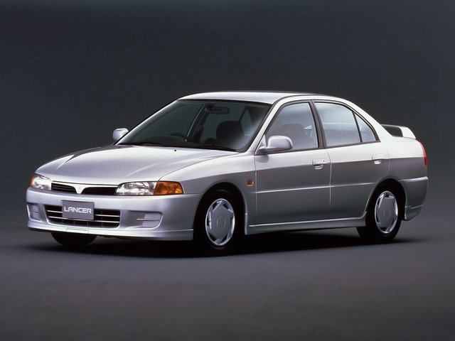

Mitsubishi Lancer 10
Митсубиси Лансер 10: отзывы владельцев, описание, характеристики. Mitsubishi Lancer X :
Очень часто на улицах наших городов можно встретить такой автомобиль, как «Митсубиси Лансер».
Модель весьма популярна не только в России, но и в СНГ.
Особым признанием пользуются девятые и десятые поколения седанов.
Разница между ними большая, и многие автолюбители не могут определиться с выбором. Но все же большинство советуют приобретать именно десятое поколение («Митсубиси Лансер X»).

Внешность автомобиля действительно получилось яркой. И если «девятка» во многом была скучной, то это поколение не оставит никого равнодушным. Машина удачно смотрится в первую очередь за счет акульего силуэта и широкой решетки радиатора. В новом поколении японцы переработали практически все части кузова.
Силовая часть
Наиболее популярные в России моторы – это 1,6-литровый и 1,8- литровый агрегаты с распределенным впрыском. Мощность первого составляет 117 лошадиных сил.
Это старый четырехступенчатый автомат и механика на пять скоростей. Расход топлива у 1,6-литровой версии составляет от 7 до 9 литров в смешанном режиме.
